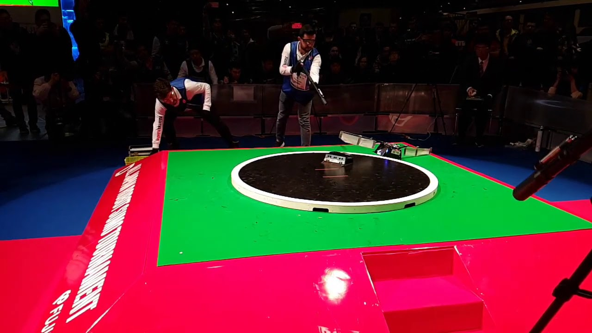
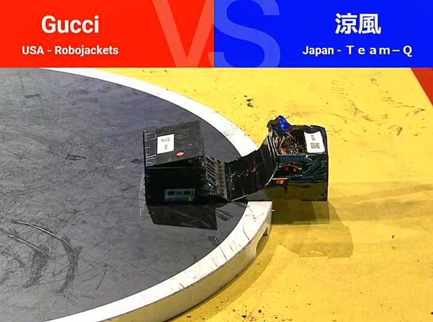

One of the competitions where Robojackets, Georgia Tech’s main competitive robotics team, regularly creates robots for is the All Japan Robot Sumo Tournament. Robotic sumo happens in a circular metal platform, where two robots try to push each other out of the rink. Because the platform is metallic, these robots count with an array of magnets capable of giving it more weight and stability. The robots need to be able to sense their opponents and dynamically strategize their movements. I was tasked in designing the robot and algorithm used in the 2018’s tournament.
There are three main challenges in designing a sumo bot: include the largest amount of magnets without exceeding the maximum weight or making the robot too heavy to steer, accurately sense and react to the opponent, and keep track of its own position in the arena.
The design of the magnet bed was defined after weeks of experimentation. The final design has a larger concentration of magnets in the center of the robot and away of the wheels, to reduce the strain on the motors.
To sense the other robot, there are three sensors that could be used: ultraviolet, infrared and time of flight sensors. After testing each in terms of accuracy and refreshing time, it became apparent that the time of flight sensors would yield the desired precision at the rapid frame rate required by the strategy program. This program was the result of several weeks of planning. It had to be a lightweight algorithm, that could be run on a simple Arduino mini, while still making use of all the input data to intelligently calculate the best methods to push its opponent away. It consists of a complex state machine, that associates the predicted positioning of the robot to the detected distance and velocity of the opponent, while taking into account the strain of the motor, and decided on the best approach (when to run away, press forward, retreat and move in a different angle or reverse its path to avoid leaving the rink).
Odometry on such a small robot is another system difficult to implement accurately. With no space in the chassis to include an encoder, I designed a fixture with hall effect sensors, that could keep up with the high-speed rotation of the wheels and still give relevant information. To make sure that the robot would notice the border of the arena, I added a reflectance sensor on all four corners of the robot, which can see the white border lining the rink.
The robot spent 6 months in development, where I was responsible for the design, machining, assembly and algorithm development. In the competition, the robot advanced two rounds before being eliminated by a critical motor failure that couldn’t be replaced before the next round.